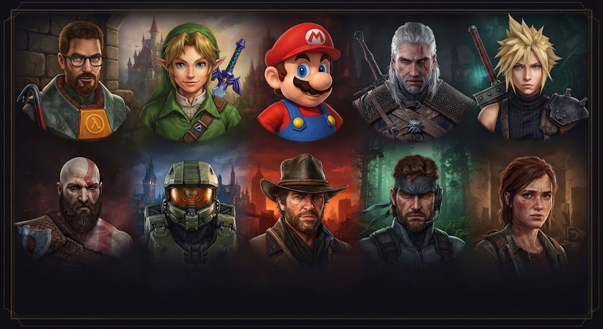
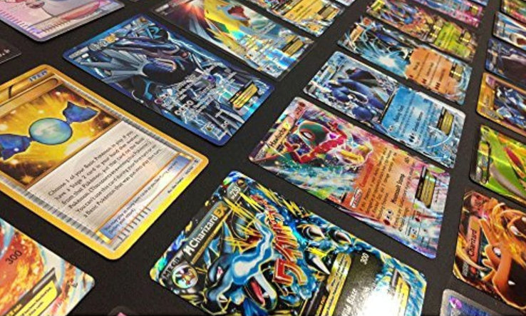
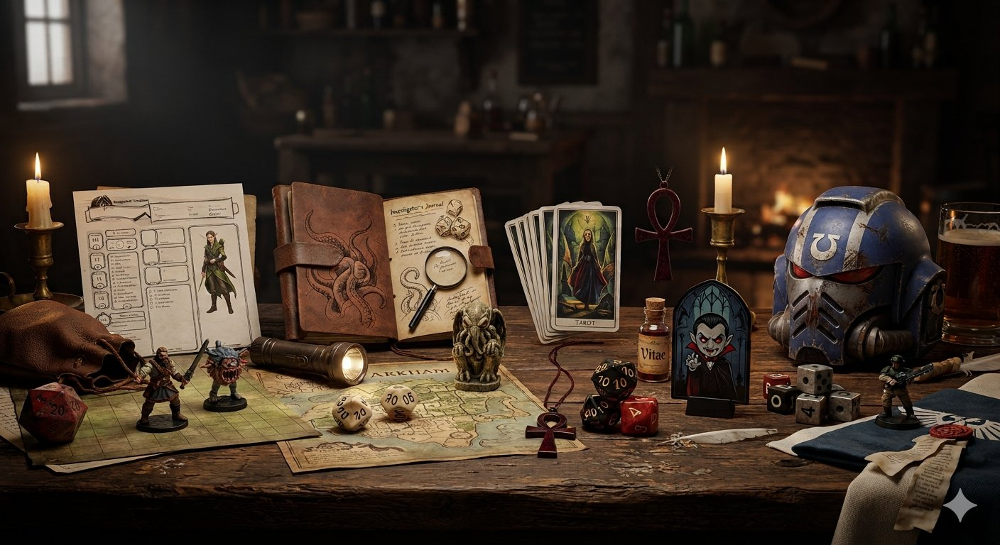

-
🎮 Videogames — Jogos de console para viver grandes aventuras

Na nossa seção de Video-games, você encontra análises, as notícias e guias completos para
dominar
desde os maiores lançamentos até as joias do cenário independente. Seja você um estrategista de
longa data, um fã de RPGs eletrônicos imersivos ou apenas alguém em busca da próxima grande
aventura digital, este é o seu save point na internet.
-
📱 Jogos Mobile — Diversão a qualquer hora

Sua próxima grande aventura na palma da mão. Na nossa área de Jogos Mobile, mostramos que você
não precisa de uma supermáquina para viver experiências épicas, competitivas ou relaxantes onde
quer que esteja. Fique por dentro dos lançamentos mais quentes para Android e iOS, descubra
atualizações dos seus jogos favoritos, encontre dicas para subir de ranking e conheça os
melhores títulos indies que estão revolucionando os smartphones. Prepare o espaço no celular e
transforme qualquer tempo livre em pura diversão!
-
🃏 Card Games — Estratégia, cartas e batalhas intensas

Monte sua estratégia, antecipe os passos do oponente e vire o jogo com a carta certa. Na nossa
seção de Card Games, nós cobrimos tudo o que envolve o universo das cartas, seja você um
duelista físico ou digital. Fique por dentro dos lançamentos e listas de decks mais fortes do
cenário atual, acompanhe as novidades e campeonatos de clássicos consolidados como Magic: The
Gathering, Yu-Gi-Oh!, Pokémon e Digimon TCG ou domine as arenas digitais de sucessos como Marvel
Snap e Hearthstone. Prepare suas mangas, ajuste sua estratégia e descubra o poder do seu próximo
deck!
-
⚔️ RPG de Tabuleiro — Aventuras épicas, desafios e muita imaginação

Reúna seu grupo, prepare os dados e dê vida às maiores histórias já contadas. Na nossa seção de
RPG de Mesa, o único limite é a sua imaginação. Seja explorando masmorras esquecidas e
enfrentando dragões nas regras lendárias de Dungeons & Dragons, testando a sua sanidade contra
os horrores cósmicos ancestrais de Call of Cthulhu, ou navegando pelas intrigas políticas da
noite na pele de um predador urbano em Vampiro: A Máscara, aqui é o ponto de encontro de
narradores e jogadores. Encontre resenhas de novos suplementos, guias de criação de personagens,
dicas para mestrar a sua primeira sessão e tudo o que você precisa para transformar uma mesa com
amigos em uma jornada inesquecível.